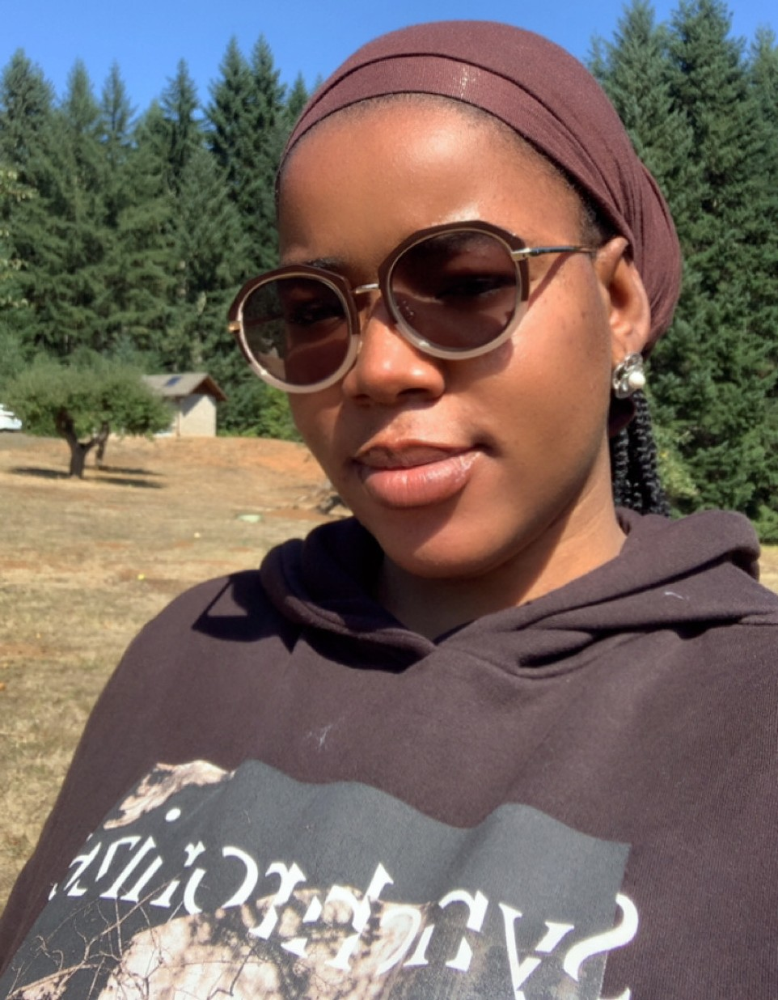

I'm a Master's/PhD student in Computer Science at Oregon State University, part of the Advanced Software Engineering Research (ANSWER) Lab and the High-Performance Computing and Systems Group (HiPCastor). I work in automated software engineering and testing, applying fuzzing, delta debugging and verification techniques to localize faults in complex systems.
Alongside that, I work on speech and language technology for low-resource African languages with LyngualLabs, covering Yoruba TTS accessibility, ASR for code-switched speech and multilingual speech recognition.
I hold a bachelor's degree in Computer Engineering from Oduduwa University, where I graduated with first-class honors as the university's top overall student. Outside research, I lead the AWS Student Builder Group at Oregon State University as its first Student Lead, and I coordinate community tech events (I was previously a GDG on Campus Lead and have spoken at 50+ RAIN-INNetwork events across Nigeria), and I recently won 1st place in the Social Impact track at BeaverHacks 2026 with SpeakAbroad, a conversation-practice platform for international students.
Talk given at the Pacific Northwest Programming Languages and Software Engineering (PNW PLSE) 2026, University of Washington.